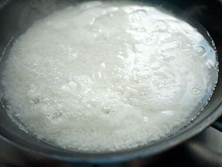
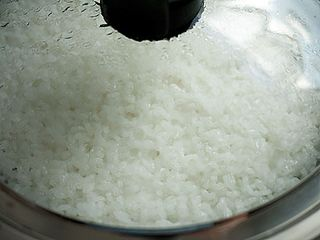
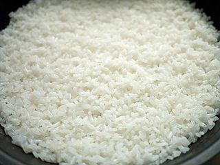
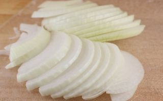
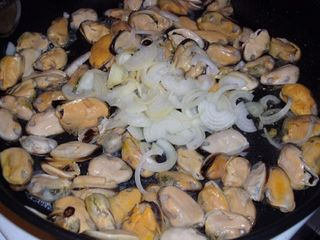
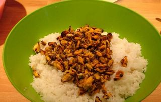

Шаг 1: Готовим рис.

Самый простой способ приготовить идеальный рассыпчатый рис - сделать это в сковороде. Рис лучше всего взять хороший - басмати или жасминовый. Поставьте сковороду на средний огонь, положите сливочное масло - половину количества, положенного по рецепту, растопите его. Высыпьте на сковороду рис и обжарьте в сливочном масле примерно 5 минут. Рис впитает масло и станет полупрозрачным. Добавьте два стакана теплой кипяченой воды. Важно! Воду обязательно подогрейте, чтобы не было резкого перепада температуры. Посолите по вкусу.

Накройте сковороду крышкой и готовьте рис на небольшом огне примерно 10-15 минут. Если сделать огонь слишком большим, то вода быстро выкипит, а рис останется сырым; если слишком маленьким - рис разварится.

Мешать рис не нужно, иначе он не получится рассыпчатый. Как только увидите, что воды осталось совсем чуть-чуть, выключайте огонь и оставьте рис настаиваться и остывать. В итоге у вас получится красивый белый и рассыпчатый рис - именно то, что нужно для салата.
Если вам удобнее и привычнее готовить рис в кастрюле - делайте как вам удобнее, главное, чтобы у вас получится правильный рис.
Шаг 2: Подготавливаем лук.

Луковицу очистите и нарежьте полукольцами. Если вам больше нравится пластинка - без проблем, нарезайте как хочется.
Шаг 3: Готовим мидии.

Мидии лучше готовить параллельно с рисом, так у вас уйдет меньше времени на приготовление блюда. Рис все равно не требует много внимания.
Замороженные мидии продаются уже очищенные. Их нужно разморозить при комнатной температуре. Процесс лучше не ускорять, чтобы не испортить их вкус. Ставьте сковороду на средний огонь, растопите оставшееся сливочное масло и обжарьте в нем мидии примерно 5 минут, добавьте лук и обжарьте все вместе еще 5 минут. Добавьте белое вино и 2-3 ст.ложки теплой кипяченой воды, посолите по вкусу и припускайте мидии на небольшом примерно 15 минут до готовности. Соус, который у нас получился из сока мидий, масла и белового вина, станет заправкой для салата.
Шаг 4: Готовим салат с мидиями и рисом.

В большую миску, чтобы удобно было мешать, выложите рис и мидии. Добавьте по вкусу соль и черный перец. Перемешайте, добавьте нарезанную петрушку и зеленый лук. Все, салат готов.